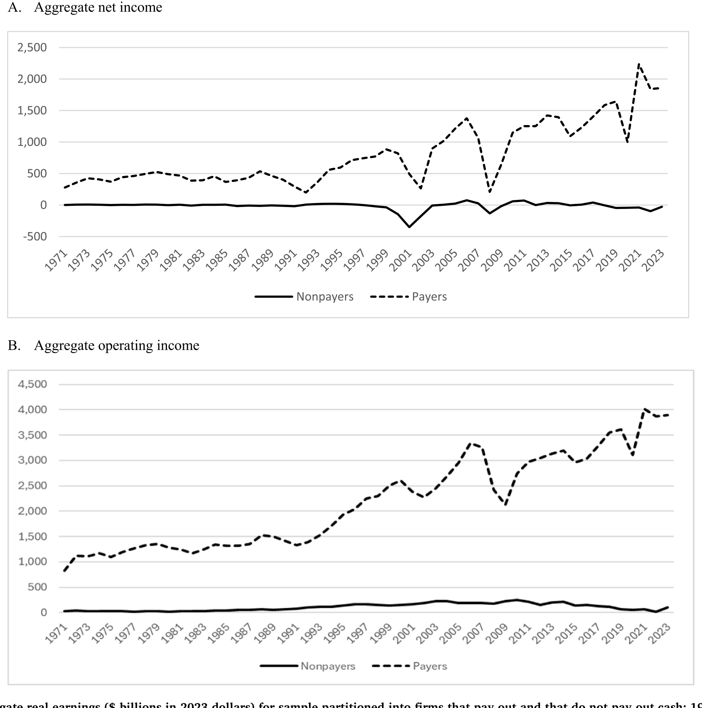
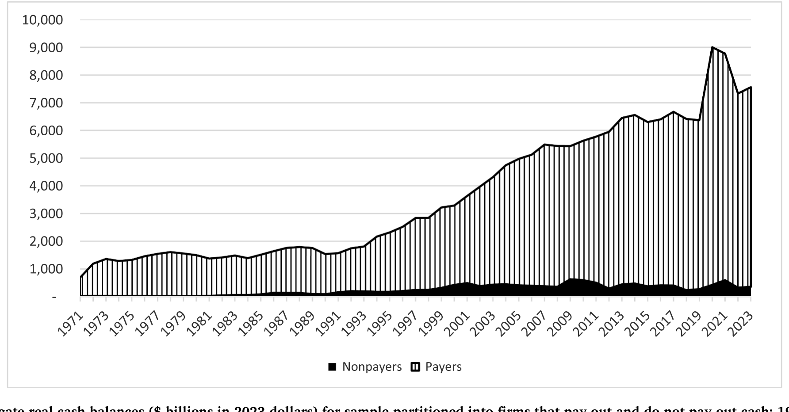
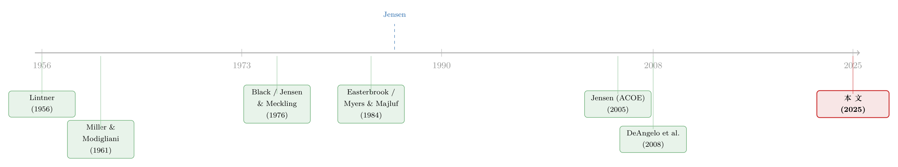

现金为什么一定要「还」出去？——四十年后，重读 Jensen 的自由现金流
本文读的是 DeAngelo, Kahle & Skinner (2025, Journal of Financial Economics)：他们用一篇回顾性的长文，重新讲清了 Jensen (1986) 那篇只有六页、却"radically transformed"了我们对公司派现政策理解的小文章——核心是一句反直觉的话：派现之所以重要，不是因为股东想要钱，而是因为它把「现金分配」和「资本配置」死死绑在了一起。文章还配了一幅跨越 1971–2023 年的实证图景：派现公司常年占据美股 85% 以上的市值，前 500 大派现者在 1986 和 2023 年都贡献了 90.0% 的派现总额，而企业的现金余额、派现规模在 1980 年代之后双双暴涨。
1 引言：一个被问了三十年的"傻"问题
先讲一个在今天看来近乎荒唐、却困住了整整一代公司金融学者的问题。
假设没有税、没有摩擦，一家公司今天少分一块钱红利，把这块钱投到一个净现值 (net present value, NPV) 为零的项目上，明年再连本带利地分出去。请问，股东亏了吗？
答案是：没亏。Brennan (1971) 和 Rubinstein (1976) 早就把这件事算清楚了——只要保留的现金最终会被全额分配、且投在不损害价值的地方，推迟派现本身不损失任何价值。
可问题就出在这里。如果推迟派现不亏，而立刻派现却要触发一笔即时的个人所得税，那么任何一个理性的公司，似乎都应该把红利无限期地往后拖。这正是 Black (1976) 那篇名篇《The Dividend Puzzle（红利之谜）》的全部张力所在。Black 说得很直白：
在 MM 定理的假设下，一家不付红利的公司，价值和它付红利时一模一样……而在红利比资本利得课税更重、资本利得又延迟到变现才征税的世界里，一家不付红利的公司，对纳税的个人投资者来说会更有吸引力。
接着，Miller (1977) 在《Debt and Taxes》里把这个逻辑推到了极致：长期推迟派现，会把派现税负的现值压到接近于零，所以个人层面的股票税率"immaterial"。一句话——现金留在公司里，永远优于立刻把它课税分出去。
于是整个 1970 年代，公司金融学界的"state-of-the-art"竟然是：企业根本就不该派现。
但现实啪啪打脸：公开上市公司年复一年地分出巨额、要立刻交税的红利。理论说不该分，公司偏偏拼命分。这条裂缝越扯越大，学界陷入了一场漫长而严肃的"困惑"(serious and protracted confusion)——所有人都在找一个体面的理由，去解释一件公司天天在做的事。
2 转折：Jensen 把问题整个翻了过来
真正关键的一步，不是给"为什么要分红"找一个更好的税收理由，而是换一个问题。
到了 1986 年，Michael Jensen 在一篇未经匿名评审、只有六页多的小文章《Agency Costs of Free Cash Flow, Corporate Finance, and Takeovers》里，做了一件极其聪明的事：他不再纠缠于"分红 vs. 不分红的税收账"，而是把派现重新摆进了资本配置 (capital allocation) 的链条里。
Jensen 的原话是这样定义自由现金流 (free cash flow, FCF) 的：
Free cash flow is cash flow in excess of that required to fund all projects that have positive net present values when discounted at the relevant cost of capital. ……The problem is how to motivate managers to disgorge the cash rather than investing it at below the cost of capital or wasting it on organizational inefficiencies.
注意这句话的重心。问题不在股东想不想要钱，而在于：一旦现金多到超过了所有正 NPV 项目的需要，把它留在公司里，就等于给了管理层一个亲手毁灭价值的机会——投到回报低于资本成本的项目上，或者干脆浪费在组织的低效里。于是派现的意义，从"满足股东的现金偏好"，变成了"防止经理人乱花钱"。
这一翻转，承接的是 Jensen & Meckling (1976) 和 Myers (1977) 打下的地基：当信息和契约成本不可忽略时，财务政策之所以重要，恰恰是因为经理人的激励，会在公司的所有权/资本结构与投资决策之间，凿出一条真实的通道。Jensen (1986) 把这条通道里最锋利的那一面——管理层的机会主义——拎了出来。
接下来，一个自然的问题是：现金怎么"逼"出去？Jensen 给的答案是一组工具——常规红利、特别红利、股票回购，以及对债权人的支付。债务在这里之所以重要，是因为它能在投资者担心经理人不肯主动分钱时，强制性地"挤"出现金 (forcing cash disgorgement)。而接管市场 (takeover market) 和股东积极主义，则是悬在过度留存、浪费 FCF 的经理人头顶上的那把剑：你不分，就有人来把你换掉。
（关于 Jensen 这套"债务作为纪律工具"的思想，以及它五十年后的命运，可参见《债务这副药，为什么不能全吃？——重读 Jensen 和 Meckling 五十年》；关于 Jensen 本人在实证上的另一面，可参见《三块积木：那个被「代理理论」盖住的实证 Jensen》。）
3 两种读法：窄的 Jensen 与宽的 Jensen
这篇 2025 年的回顾，最有价值的一个理论澄清，是它明确区分了学界对 Jensen (1986) 的两种读法，并旗帜鲜明地选了其中一种：
- 读法 #1（窄）：Jensen 只对那些"缺乏好投资机会"的公司重要。
- 读法 #2（宽）：Jensen 对公司普遍重要，包括那些当前盈利和流动性都远超当下投资需要的公司。
读法 #1 来自 Jensen 论文里那些经典例子——经理人拿现金去投绝对意义上的烂项目（最典型的是 1980 年代的石油公司）。它不是没有证据：Lang et al. (1991) 就发现，低 Tobin's Q（即投资机会差的代理变量）的公司在宣布收购要约时，股票回报与现金流显著负相关。
但作者把赌注押在读法 #2 上，理由很有说服力：读法 #1 适用的公司"太窄了"，根本撑不起我们在数据里看到的、几十年来如此庞大的总派现量。难道是全市场的公司普遍缺好项目？显然不是——像 Apple、Microsoft 这样欣欣向荣的科技公司，明明有大把好的新投资，只不过它们过去投资赚回来的钱，比这些好机会还要多。
读法 #2 的精髓在于：代理问题不只是"帝国建造"或赤裸裸的偷窃。资源的充裕本身，就足以滋生一种对花钱的松懈态度——项目的试错、采纳、监督都变得草率，而由于现实中评估各种投资/经营政策的盈利能力极其困难，这种松懈完全可以长期存活下去。
这也让 Jensen (1986) 和他后来 Jensen (2005) 的"高估股权的代理成本"(agency costs of overvalued equity, ACOE) 成了同一枚硬币的两面：FCF 论文讲的是过度留存现金导致的投资扭曲，ACOE 论文讲的是市场高估股价、让公司能廉价增发所带来的同一类扭曲——一个是现金出不去，一个是现金灌进来，病根都是经理人手里钱太多。
4 一个更大的野心：派现不是资本结构的"附属品"
如果只读到这里，你可能以为这只是一篇梳理派现文献的综述。但作者真正想推的，是一个关于公司金融理论"框架"的论断。
传统的 MM (1958, 1961) 框架，是从一个两证券（债与股）的公司出发，加入各种摩擦，去求解一个资本结构的最优点。在这个框架下，派现政策被 MM 1961 年那篇红利政策的后续工作，悄悄摆在了"从属于债-股比"的位置上。
作者提议反过来想：先从一家只有股权、运行在无摩擦世界里的公司出发，然后看两类决策——
- 第一类：现金怎么以最有效的方式"进入"公司去融资投资。这一类的奠基贡献是 Myers & Majluf (1984) 的信息不对称分析。
- 第二类：投资的回报怎么"分配"给资本的供给者，以免被浪费。这一类的奠基贡献，正是 Jensen (1986) 的 FCF 分析。
在这个视角下，债-股资本结构的选择，不再是公司金融的核心问题。公司财务政策由两条原则驱动：(i) 以最有效率的方式把现金弄进来投生产性项目；(ii) 把投资的回报分配出去以免被浪费。这两条原则被一条教科书级的逻辑紧紧绑住——
$$ \text{Firms raise capital at attractive terms only to the extent investors expect future payouts whose PV} \;\ge\; \text{the capital they contribute.} $$
即：投资者愿意以好条件供给资本，当且仅当他们预期未来能收到的派现，其现值至少不低于他们投入的资本。资本的"进"与"出"，本就是一回事的两端。于是结论水落石出：
派现政策不该被看作"次于"资本结构的二等问题——这恰恰是 MM 1961 引导我们去想的方式。相反，Jensen (1986) 让我们看清，派现政策是公司财务政策中一块核心的、关乎价值创造的基石 (a primary building block)。
这是这篇文章在理论层面最大的一次"拔高"：它要把 Jensen 从"派现文献里的一篇重要论文"，重新安放为整个公司金融理论双柱之一。
5 实证图景：四十年里，谁在派现？
把镜头从理论拉回数据。作者用 CRSP/Compustat 样本，画了一幅 1971–2023 年的派现地形图，给 Jensen 的洞见提供"real-world texture"。几个关键的规律性事实：
第一，派现公司主宰着美股。 在 1971–2023 的所有年份里，除两年外，派现公司（payers）都占据了总市值的 85% 以上；若以盈利衡量，这种主宰更强。换句话说，美国的公开股权市场，被处在企业生命周期"分配阶段"的公司牢牢统治——而这正是 Jensen (1986) 的焦点所在。
下面这张图把这件事说得很直观：派现公司与不派现公司的总实际盈利(以 2023 年美元计) 在半个世纪里的此消彼长。

Figure 2: Aggregate real earnings ($ billions in 2023 dollars) for sample partitioned into firms that pay out and that do not pay out cash: 1971-2023
第二，派现高度集中，且这个集中度纹丝不动。 前 500 大派现者在 1986 和 2023 年都恰好贡献了 90.0% 的派现总额；它们占净利润的比重分别是 85.6% 和 92.8%。而这前 500 家，在 1986 年只占全样本（派现+不派现）公司的约 1/10，2023 年约 1/8。少数巨头供给了几乎全部的现金分配——这一点从 Jensen 那个年代到今天，惊人地稳定。
第三，派现者的"身份"换了人。 GM、IBM、GE——20 世纪最成功的三家公司——在 1986 年都是派现巨头，今天却已无足轻重。如今最重要的现金分配者是科技公司、石油公司和银行；其中只有石油公司在 Jensen 的年代就是派现大户。银行与科技公司的崛起，反映了产业集中度的上升 (Kahle & Stulz, 2017) 和"超级明星企业"的出现 (Autor et al., 2020)。
第四，派现的"形式"变了。 自 Jensen 1986 年写下那篇文章以来，派现组合明显从红利转向了股票回购——这一转变被 1982 年创设的"安全港"(safe-harbor) 监管指引（即 SEC 的 Rule 10b-18）大大便利化：它让公司可以回购股票，而不必担心被指控操纵股价。
第五，现金余额暴涨，但这一条 Jensen 解释不了。 实际派现、实际盈利、实际现金余额自 1980 年代以来都大幅上升。以盈利为分母的派现率自 2000 年后显著上升，但现金余额中被分配出去的比例却没有清晰趋势。作者很诚实地承认：现金余额的上升，单靠 Jensen (1986) 解释不了——因为 Jensen 的逻辑恰恰是"缺乏财务弹性"才是限制经理人乱花钱的宝贵手段。更可能的解释是监督的改善（投资者积极主义、公司治理整体进步，如 Holmstrom & Kaplan, 2001）降低了现金被浪费的概率，从而让公司能安心地持有更高的现金。

Figure 6: Aggregate real cash balances ($ billions in 2023 dollars) for sample partitioned into firms that pay out and do not pay out cash: 1971-2023
（关于"自由现金到底被花到哪里"这个紧密相关的实证问题，可参见《一万七千亿美元的「自由现金」，被花到哪里去了？》。）
6 尾声：当回购被推上政治审判台
文章最后落到一个当下的话题：过去十来年，针对企业派现——尤其是股票回购——的政治攻击 (politicization) 大幅升温。批评者（政客与社会活动家）认为，企业与其回购，不如把钱投到工人、社区、创新和绿色能源上。
作者的态度很清楚：现金派现的集中、规模与可替代性(fungibility)，恰恰使它成了政治上极有吸引力的攻击目标。但从 Jensen 的逻辑看，强迫公司把本该分出去的 FCF 留下来"投资工人和社区"，等于是人为地重建了那条让经理人浪费现金的通道。这一节与 DeAngelo (2023) 那篇《The attack on share buybacks》一脉相承。
7 文献脉络
把这条线索捋直，你会看到一段很漂亮的"问题如何被重新提出"的思想史。
最早是 Lintner (1956) 的经理人访谈，记录下两条极其稳健的规律：红利与盈利根本性地相连；经理人极不愿意削减常规红利。接着 Miller & Modigliani (1961) 用无关性定理，把整个学界的棱镜彻底换了一遍——却也把派现政策摆到了从属于资本结构的位置，并埋下了"为什么要付要交税的红利"这个谜题。
然后是漫长的"税收派"主导期：Brennan (1971)、Rubinstein (1976) 证明推迟派现不损失价值；Black (1976) 把它写成了著名的"红利之谜"；Miller (1977) 在《Debt and Taxes》里把"留存优于即时派现"推到极致。中间虽有 Auerbach (1979)、Bradford (1981) 的税收资本化论点试图反驳，却因为 Black 与 Miller 的崇高地位而几乎没人理会。
转折来自代理理论一脉：Jensen & Meckling (1976) 把公司金融从完美市场拉进了契约摩擦与激励问题；Rozeff (1982)、Easterbrook (1984) 第一次把派现决策和代理理论挂钩（资本市场监督论）；Myers & Majluf (1984) 解决了"现金怎么进来"。最终，Jensen (1986) 解决了"现金怎么出去"，把派现重新定义为资本配置问题，一举改变了整个领域。
此后这条线继续生长：Fama & French (2001) 记录"红利消失"；DeAngelo, DeAngelo & Skinner (2004) 揭示红利的集中化；Brav et al. (2005) 用问卷重述 21 世纪的派现政策；DeAngelo et al. (2008) 写成了那本权威的《Corporate Payout Policy》。而本文 (2025)，正是这群作者在 Jensen 离世后，对这条思想史的一次系统回望与再定位。

8 评论与延伸（Q&A + 研究方向）
(a) 几个可能的疑问
Q：这篇文章是综述，还是有新的实证发现？
两者都有，但重心是"重新框定"。它没有提出新的识别策略，而是用一套跨 1971–2023 年的描述性统计（市值占比、派现集中度、现金余额趋势）给 Jensen 的洞见提供现实质感，并在理论上把派现政策从"资本结构的附属"提升为"公司金融两大支柱之一"。把它当作一篇有数据支撑的"thought piece"更准确。
Q：Jensen 说的 FCF，和华尔街天天讲的 free cash flow 是一回事吗？
不是。差别很微妙但很关键。华尔街和企业高管口中的 FCF，通常是"经营性现金流减去实际资本开支"；而 Jensen 的 FCF，指的是在一个已经优化的、价值最大化的投资/经营政策下的净现金流。前者用的是公司实际投了多少，后者用的是公司"应该"投多少。读法 #1 与 #2 的分歧，某种程度上就源于这个定义差异。
Q：既然现金余额暴涨，是不是说明 Jensen 的代理成本逻辑失灵了？
作者自己承认 Jensen (1986) 单独解释不了现金余额的上升——因为 Jensen 的逻辑里，"没有财务弹性"才是约束经理人的宝贵手段。他们给的弥合是：监督水平整体提高了（积极主义、治理改善），降低了现金被浪费的概率，于是公司可以安全地多持现金。这是个合理但未被严格识别的解释——它把一个反例转化成了"监督改善"的旁证，论证上略有循环之嫌。
Q：派现集中度从 1986 到 2023 几乎不变（都是 90.0%），这是巧合吗？
大概率不是巧合，而是反映了一个深层结构：无论哪个年代，盈利都高度集中在少数巨头手里，而派现又紧跟盈利。变的是这些巨头的"身份"（从 GM/IBM/GE 到科技、银行、石油），不变的是"少数公司供给绝大多数现金"这个结构。这恰恰呼应了 DeAngelo, DeAngelo & Skinner (2004) 的红利集中化发现。
Q：从读法 #1 转向读法 #2，对实证检验意味着什么？
意味着检验 Jensen 不能只盯着"低 Q、烂项目"的公司。读法 #2 把 Apple、Microsoft 这类高盈利、有好项目但盈利更多的公司也纳入了代理问题的范畴——它们的"过度松懈"很难直接观测。这让 Jensen 的理论更普适，但也更难证伪：当一个理论同时适用于缺机会和不缺机会的公司时，它的实证含义反而变模糊了。
Q：把回购政治化，从 Jensen 的视角看错在哪？
强迫公司留下 FCF 去"投资工人、社区、绿色能源"，等于人为地把那条让经理人浪费现金的通道又接上了。Jensen 的整套逻辑是：当现金超过好项目所需时，留下来的边际投资回报低于资本成本。政治诉求恰恰是在要求企业去做这种低回报投资——这与生产效率的方向相反。当然，这是规范判断，前提是承认 Jensen 的代理成本框架。
(b) 几个可能的研究问题与提案
1. 自由现金流代理成本，在公司债市场里如何定价？
【经济故事】Jensen 强调债务是"挤出"现金的纪律工具，但债权人本身也会担心 FCF 被浪费。一家 FCF 充裕、投资机会贫乏、又不肯派现的公司，其信用利差是否更高？换句话说，债券市场会不会比股票市场更早地给"代理成本"定价？ 【可行性】高。数据现成：Compustat 算 FCF 与 Tobin's Q，TRACE 取公司债利差，按"高 FCF × 低 Q × 低派现"构造组合。识别上可借助派现政策的外生冲击（如 2003 红利税改、各州反收购法）做 DiD。难点在于把"代理成本"从"基本面恶化"中干净地剥离。
2. 外资持有人会改变 FCF 的派现倾向吗？
【经济故事】不同国家的机构投资者对派现的偏好与监督能力不同。外资持股上升，究竟是加强了对管理层"吐出现金"的压力，还是因为信息劣势反而放松了监督？这直接对接 Jensen 读法 #2 里"监督改善让公司能安全持现"的机制。 【可行性】中。数据可用 FactSet/13F 与各国机构持股，派现用 Compustat。识别可借 MSCI 指数纳入这类准外生事件做断点/DiD。难点是外资持股与公司质量内生，需要好的工具变量。
3. "安全港"(Rule 10b-18, 1982) 究竟让多少现金从红利转向了回购？
【经济故事】文章把派现形式从红利转向回购归因于 1982 年的安全港规则，但这更多是叙事而非因果估计。这条规则的引入是一个清晰的时间断点，可以量化它对派现组合、对派现总量、以及对投资的真实影响。 【可行性】中。1982 是单一时间点，纯时间序列断点难以排除同期其他冲击；可考虑用回购敏感度不同的行业/公司（如股权激励密集 vs. 稀疏）构造截面差异做 triple-diff。数据 Compustat 可得，但回购计量本身有 Banyi et al. (2008) 指出的 PRSTKC 高估问题，需谨慎处理。
4. 现金余额上升：是"监督改善"还是"预防性储蓄"？
【经济故事】作者把现金暴涨归于监督改善，但 Bates, Kahle & Stulz (2009) 给的解释是现金流风险上升下的预防性动机。这两种机制对派现的含义完全相反——一个说"放心多持现"，一个说"被迫多持现"。能否设计一个检验把二者分开？ 【可行性】中。可用治理质量代理（机构持股、董事会独立性）与现金流波动率同时进回归，看现金余额对哪一维度更敏感；并检验高现金公司事后的投资质量（ROA、并购回报）。数据齐备，难在治理变量的测量误差与内生性。
5. 派现集中度与系统性风险：少数巨头供给 90% 的现金，意味着什么？
【经济故事】既然前 500 大派现者贡献了九成派现，那么宏观层面的总派现，对这几百家公司的盈利冲击会高度敏感。这种集中是否让"总派现"成了一个比想象中更脆弱、更顺周期的宏观变量？对依赖股息收入的养老/保险机构意味着什么？ 【可行性】中偏低。描述与相关性分析容易（Compustat 聚合即可），但要讲成因果（集中度→系统性脆弱）需要外生的"巨头盈利冲击"，识别难度较大，更适合做成一篇偏宏观-金融的描述性 + 情景模拟文章。
9 参考文献与我的判断
我的判断。 这篇文章的贡献，不在于任何一个新系数，而在于它重新校准了我们看待派现的角度：把 Jensen (1986) 从"派现文献中的一篇"，提升为与 Myers & Majluf (1984) 并列的、公司金融"现金进-出"双柱之一。这个框定是有说服力的，尤其是"派现政策不从属于资本结构"这一论断，纠正了 MM 1961 留下的思维惯性。坚持读法 #2（对所有公司、而非只对烂项目公司适用）也是诚实而有勇气的——它承认了 Apple 式公司的代理问题，尽管这让理论更难证伪。
对识别的担忧。 全文是描述性的，几乎没有因果识别。最薄弱的一环是"现金余额上升 = 监督改善"这个解释：它把一个明确的反例（Jensen 框架预测低现金）转化为"治理进步"的旁证，却没有把它和 Bates et al. (2009) 的预防性储蓄假说分开。另外，把派现形式的转变归因于 1982 安全港规则，更多是时间上的吻合而非识别出来的因果。
后续想看到的。 我最想看到有人把这套"代理成本"框架搬到公司债与信用市场里去检验——债权人对 FCF 浪费的担忧，是否比股东更早、更精确地反映在利差上；以及外资持有人结构的变化，究竟是收紧还是放松了对"吐出现金"的监督。这两个方向，既贴着本文的核心机制，又有现成的数据和可用的准自然实验，是把一篇优雅的回顾，接回到可识别实证的自然落点。
参考文献
- Auerbach, A. (1979). Share valuation and corporate equity policy. Journal of Public Economics 11, 291–308.
- Autor, D., Dorn, D., Katz, L., Patterson, C., & van Reenen, J. (2020). The fall of the labor share and the rise of superstar firms. Quarterly Journal of Economics 135, 645–709.
- Banyi, M., Dyl, E., & Kahle, K. (2008). Errors in estimating share repurchases. Journal of Corporate Finance 14, 460–474.
- Bates, T., Kahle, K., & Stulz, R. (2009). Why do U.S. firms hold so much more cash than they used to? Journal of Finance 64, 1985–2021.
- Black, F. (1976). The dividend puzzle. Journal of Portfolio Management 2, 5–8.
- Bradford, D. (1981). The incidence and allocation effects of a tax on corporate distributions. Journal of Public Economics 15, 1–22.
- Brav, A., Graham, J., Harvey, C., & Michaely, R. (2005). Payout policy in the 21st century. Journal of Financial Economics 77, 483–527.
- Brennan, M. (1971). A note on dividend irrelevance and the Gordon valuation model. Journal of Finance 26, 1115–1121.
- DeAngelo, H. (2023). The attack on share buybacks. European Financial Management 29, 389–398.
- DeAngelo, H., DeAngelo, L., & Skinner, D. (2004). Are dividends disappearing? Dividend concentration and the consolidation of earnings. Journal of Financial Economics 72, 425–456.
- DeAngelo, H., DeAngelo, L., & Skinner, D. (2008). Corporate payout policy. Foundations and Trends in Finance 3, 95–287.
- DeAngelo, H., Kahle, K., & Skinner, D. (2025). Agency cost of free cash flow, capital allocation, and payouts. Journal of Financial Economics 172, 104117.
- Easterbrook, F. (1984). Two agency-cost explanations of dividends. American Economic Review 74, 650–659.
- Fama, E., & French, K. (2001). Disappearing dividends: changing firm characteristics or lower propensity to pay? Journal of Financial Economics 60, 3–43.
- Holmstrom, B., & Kaplan, S. (2001). Corporate governance and merger activity in the United States: making sense of the 1980s and 1990s. Journal of Economic Perspectives 15, 121–144.
- Jensen, M. (1986). Agency costs of free cash flow, corporate finance, and takeovers. American Economic Review 76, 323–329.
- Jensen, M. (2005). Agency costs of overvalued equity. Financial Management 34, 5–19.
- Jensen, M., & Meckling, W. (1976). Theory of the firm: managerial behavior, agency costs, and ownership structure. Journal of Financial Economics 3, 305–360.
- Lang, L., Stulz, R., & Walkling, R. (1991). A test of the free cash flow hypothesis. Journal of Financial Economics 29, 315–335.
- Lintner, J. (1956). Distribution of incomes of corporations among dividends, retained earnings, and taxes. American Economic Review 46, 97–113.
- Miller, M. (1977). Debt and taxes. Journal of Finance 32, 261–275.
- Miller, M., & Modigliani, F. (1961). Dividend policy, growth, and the valuation of shares. Journal of Business 34, 411–433.
- Miller, M., & Scholes, M. (1978). Dividends and taxes. Journal of Financial Economics 6, 333–364.
- Modigliani, F., & Miller, M. (1958). The cost of capital, corporation finance and the theory of investment. American Economic Review 48, 261–297.
- Myers, S. (1977). Determinants of corporate borrowing. Journal of Financial Economics 5, 147–175.
- Myers, S., & Majluf, N. (1984). Corporate financing and investment decisions when firms have information that investors do not have. Journal of Financial Economics 13, 187–221.
- Rozeff, M. (1982). Growth, beta and agency costs as determinants of dividend payout ratios. Journal of Financial Research 5, 249–259.
- Rubinstein, M. (1976). The valuation of uncertain income streams and the pricing of options. Bell Journal of Economics 7, 407–425.